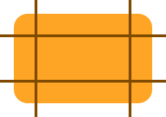
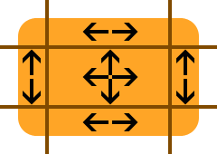

How to use the Feathers Scale9Image display object
The Scale9Image class displays a texture divided into nine regions. When the dimensions of a Scale9Image are changed, the corners will not scale and each of the edges will scale in only one direction. The center region will be scaled in both directions normally. Scale9Image allows you to create a shape with features like rounded corners and borders for user interface components like buttons and windows.
Regions

The image above divides a rounded rectangle into nine regions. The four lines, two horizontal and two vertical, show where the image is sliced. The exact pixel location of these "slices" are easily configurable, as you will see later.
The image below uses arrows to show how each of the regions will scale. Some regions will not scale. Some will scale only horizontally. Some will scale only vertically. Finally, some may scale in both directions.

From this point forward, each region will be named by combining its horizontal and vertical position. Horizontal positions are "left", "center", and "right". Vertical positions are "top", "middle", and "bottom".
The top-left, top-right, bottom-left, and bottom-right regions (the corners) will not be scaled.
The top-center and bottom-center region will scale horizontally. These regions will not scale vertically.
The middle-left and middle-right regions will scale vertically. It will not scale horizontally.
The middle-center region will scale both horizontally and vertically.
The Grid
A rectangle defines the grid. Actually, this rectangle specifically defines the middle-center region described above. Each of the other regions can be automatically calculated using the rectangle and the original width and height of the texture.
The orange rounded rectangle pictured above is 200 pixels wide and 130 pixels tall. Using the lines in the picture, we'll define the scale 9 grid. The x and y values of the rectangle are both 30. The width of the rectangle is 140 pixels. The height of the rectangle is 70 pixels.
30 + 140 + 30 = 200
30 + 70 + 30 = 130The left and right regions don't necessarily need to be the same size. Neither do the top and bottom regions. However, for rounded corners, it will often be the case that these regions are the same size.
Code
First, let's create a feathers.textures.Scale9Textures object:
var texture:Texture = Texture.fromBitmapData( bitmapData );
var rect:Rectangle = new Rectangle( 30, 30, 140, 70 );
var textures:Scale9Textures = new Scale9Textures( texture, rect );This object is created from a standard starling.textures.Texture object and the flash.geom.Rectangle object that defines the middle center region.
We'll pass the Scale9Textures object to a new feathers.display.Scale9Image object:
var image:Scale9Image = new Scale9Image( textures );
image.width = 100;
image.height = 100;
this.addChild( image );You can easily change the width and height properties, and the regions will scale appropriately, as described above.